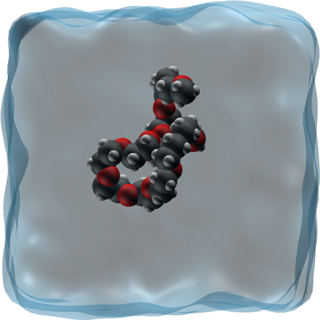
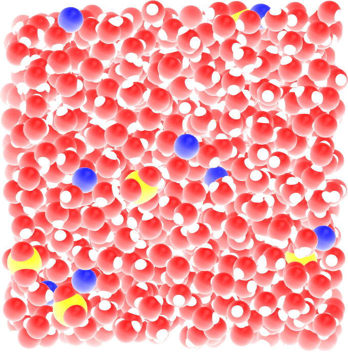
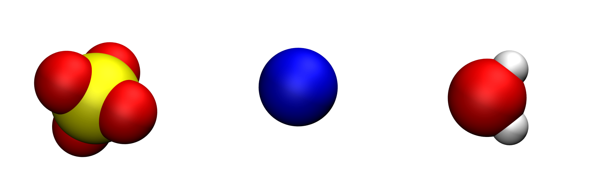
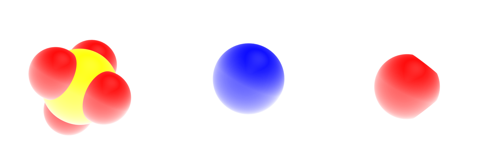
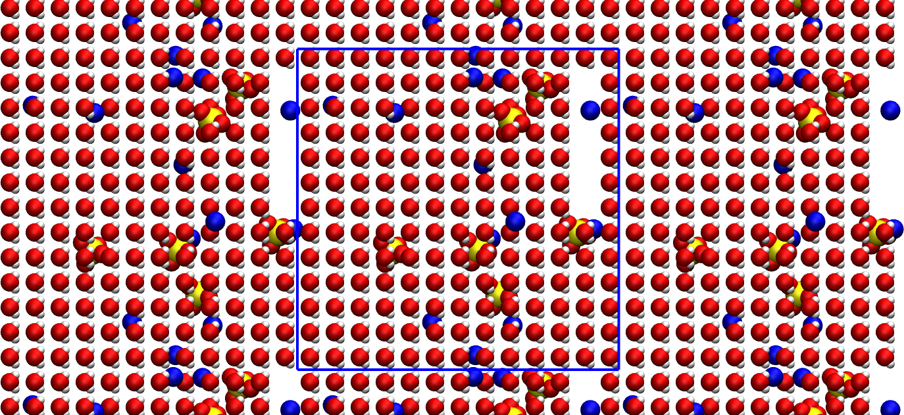
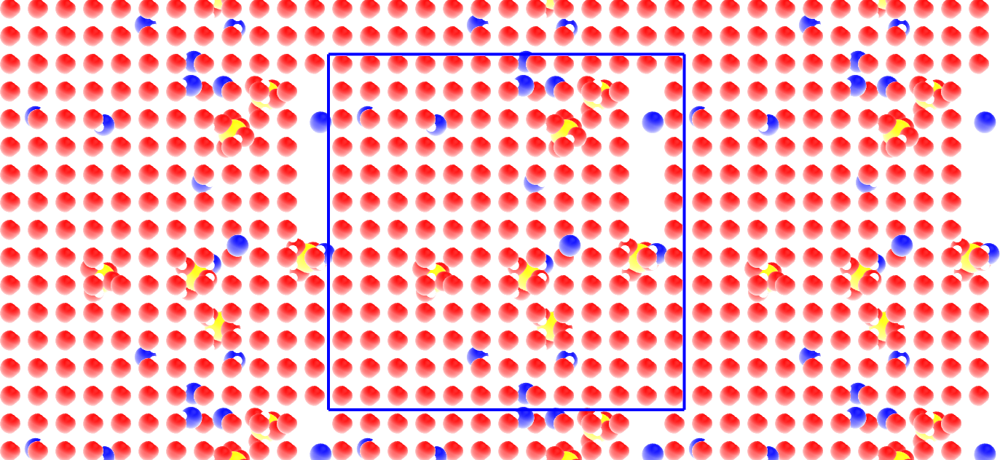

Create topology#
Writing the topology file.
{kind=link}

{kind=link}

The objective of this tutorial is to write a simple topology file using python, by placing molecules and ions in an empty box.
The topology file will be used in Bulk salt solution. If you are only interested in learning GROMACS, jump directly in Bulk salt solution.
Looking for help with your project?
See the Contact page.
What is a .gro file?#
A .gro file contains the initial positions of all the atoms of a simulation, and can be read by GROMACS. Its structure is the following:
Name of the system
number-of-atoms
residue-number residue-name atom-name atom-number atom-positions (x3) # first atom
residue-number residue-name atom-name atom-number atom-positions (x3) # second atom
residue-number residue-name atom-name atom-number atom-positions (x3) # third atom
(...)
residue-number residue-name atom-name atom-number atom-positions (x3) # penultimate atom
residue-number residue-name atom-name atom-number atom-positions (x3) # last atom
box-size (x3)
One particularity of .gro file format, each column must be located at a fixed position, see the GROMACS manual.
Molecule/ions definitions#
Open a blank python script, call it molecules.py, and copy the following lines in it:
import numpy as np
# define SO4 ion
def SO4_ion():
Position = np.array([[0.1238, 0.0587, 0.1119], \
[0.0778, 0.1501, -0.1263], \
[-0.0962, 0.1866, 0.0623], \
[-0.0592, -0.0506, -0.0358],\
[0.0115, 0.0862, 0.0030]])
Type = ['OS', 'OS', 'OS', 'OS', 'SO']
Name = ['O1', 'O2', 'O3', 'O4', 'S1']
Resname = 'SO4'
return Position, Type, Resname, Name
# define Na ion
def Na_ion():
Position = np.array([[0, 0, 0]])
Type = ['Na']
Name = ['Na1']
Resname = 'Na'
return Position, Type, Resname, Name
# define water molecule
def H20_molecule():
Position = np.array([[ 0. , 0. , 0. ], \
[ 0.05858, 0.0757 , 0. ], \
[ 0.05858, -0.0757 , 0. ], \
[ 0.0104 , 0. , 0. ]])
Type = ['OW', 'HW', 'HW', 'MW']
Name = ['OW1', 'HW1', 'HW2', 'MW1']
Resname = 'Sol'
return Position, Type, Resname, Name
Each function corresponds to a residue, and contains the positions, type, and name of all the atoms, as well as the name of the residue. These function will be called every time we will need to place a residue in our system.
The sulfide (\(\text{SO}_4^{2-}\)), sodium (\(\text{Na}^{+}\)) and water molecules (\(\text{H}_2\text{O}\)) look like that, respectively:


Oxygen atoms are in red, hydrogen atoms in white, sodium atom in blue, and sulfur atom in yellow. The fourth point (MW) of the water molecule is not visible.#
Creating the gro file#
We first need to define the basic parameters, such as the number of residue we want, or the box size, and initialize some lists and counters.
Next to molecule.py, create a nez Python file called generategro.py, and copy the following lines into it:
import numpy as np
from molecules import SO4_ion, Na_ion, H20_molecule
# define the box size
Lx, Ly, Lz = [3.36]*3
box = np.array([Lx, Ly, Lz])
Here box is an array containing the box size along all 3 coordinates of space, respectively Lx, Ly, and Lz. Here a cubic box of lateral dimension 3.6 nm is used.
Now, let us choose a salt concentration, and calculate the number of ions and water molecules accordingly, while also choosing the total number of residue (here I call residue either a molecule or an ion):
Mh2o = 0.018053 # kg/mol - water
ntotal = 720 # total number of molecule
c = 1.5 # desired concentration in mol/L
nion = c*ntotal*Mh2o/(3*(1+Mh2o*c)) # desired number for the SO4 ion
nwater = ntotal - 3*nion # desired number of water
Let us also choose typical cutoff distances for each species. These cutoffs will be used to ensure that no species are inserted too close from one another:
dSO4 = 0.45
dNa = 0.28
dSol = 0.28
Let us initialized counters and lists for storing all the necessary data:
cpt_residue = 0
cpt_atoms = 0
cpt_SO4 = 0
cpt_Na = 0
cpt_Sol = 0
all_positions = []
all_resnum = []
all_resname = []
all_atname = []
all_attype = []
Let us add a number nion of \(\text{SO}_4^{2-}\) ions at random locations. To avoid overlap, let us only insert ion if no other ions is located at a distance closer than dSO4:
# add SO4 randomly
atpositions, attypes, resname, atnames = SO4_ion()
while cpt_SO4 < np.int32(nion):
x_com, y_com, z_com = generate_random_location(box)
d = search_closest_neighbor(np.array(all_positions), atpositions + np.array([x_com, y_com, z_com]), box)
if d < dSO4:
add_residue = False
else:
add_residue = True
if add_residue == True:
cpt_SO4 += 1
cpt_residue += 1
for atposition, attype, atname in zip(atpositions, attypes, atnames):
cpt_atoms += 1
x_at, y_at, z_at = atposition
all_positions.append([x_com+x_at, y_com+y_at, z_com+z_at])
all_resnum.append(cpt_residue)
all_resname.append(resname)
all_atname.append(atname)
all_attype.append(attype)
Here, two functions are used: generate_random_location and search_closest_neighbor. Let us define those two functions. Create a new Python script, call it utils.py, and copy the following lines in it:
import numpy as np
from numpy.linalg import norm
def generate_random_location(box):
"""Generate a random location within a given box."""
return np.random.rand(3)*box
def search_closest_neighbor(XYZ_neighbor, XYZ_molecule, box):
"""Search neighbor in a box and return the closest distance.
If the neighbor list is empty, then the box size is returned.
Periodic boundary conditions are automatically accounted
"""
if len(np.array(XYZ_neighbor)) == 0:
min_distance = np.max(box)
else:
min_distance = np.max(box)
for XYZ_atom in XYZ_molecule:
dxdydz = np.remainder(XYZ_neighbor - XYZ_atom + box/2., box) - box/2.
min_distance = np.min([min_distance,np.min(norm(dxdydz,axis=1))])
return min_distance
The generate_random_location function simply generates 3 random values within the box. The search_closest_neighbor looks for the minimum distance between existing atoms (if any) and the new residue.
Let us do the same for the \(\text{Na}^{+}\) ion :
# add Na randomly
atpositions, attypes, resname, atnames = Na_ion()
while cpt_Na < np.int32(nion*2):
x_com, y_com, z_com = generate_random_location(box)
d = search_closest_neighbor(np.array(all_positions), atpositions + np.array([x_com, y_com, z_com]), box)
if d < dNa:
add_residue = False
else:
add_residue = True
if add_residue == True:
cpt_Na += 1
cpt_residue += 1
for atposition, attype, atname in zip(atpositions, attypes, atnames):
cpt_atoms += 1
x_at, y_at, z_at = atposition
all_positions.append([x_com+x_at, y_com+y_at, z_com+z_at])
all_resnum.append(cpt_residue)
all_resname.append(resname)
all_atname.append(atname)
all_attype.append(attype)
Let us also insert water molecules on a 3D regular grid with spacing of dSol (only if no overlap exists):
# add water randomly
atpositions, attypes, resname, atnames = H20_molecule()
for x_com in np.arange(dSol/2, Lx, dSol):
for y_com in np.arange(dSol/2, Ly, dSol):
for z_com in np.arange(dSol/2, Lz, dSol):
d = search_closest_neighbor(np.array(all_positions), atpositions + np.array([x_com, y_com, z_com]), box)
if d < dSol:
add_residue = False
else:
add_residue = True
if (add_residue == True) & (cpt_Sol < np.int32(nwater)):
cpt_Sol += 1
cpt_residue += 1
for atposition, attype, atname in zip(atpositions, attypes, atnames):
cpt_atoms += 1
x_at, y_at, z_at = atposition
all_positions.append([x_com+x_at, y_com+y_at, z_com+z_at])
all_resnum.append(cpt_residue)
all_resname.append(resname)
all_atname.append(atname)
all_attype.append(attype)
if cpt_Sol >= np.int32(nwater):
break
print(cpt_Sol, 'out of', np.int32(nwater), 'water molecules created')
Let us ask Python to print a few information such as the actual concentration:
print('Lx = '+str(Lx)+' nm, Ly = '+str(Ly)+' nm, Lz = '+str(Lz)+' nm')
print(str(cpt_Na)+' Na ions')
print(str(cpt_SO4)+' SO4 ions')
print(str(cpt_Sol)+' Sol mols')
Vwater = cpt_Sol/6.022e23*0.018 # kg or litter
Naddion = (cpt_Na+cpt_SO4)/6.022e23 # mol
cion = Naddion/Vwater
print('The ion concentration is '+str(np.round(cion,2))+' mol per litter')
Finally, let us write the configuration (.gro) file:
# write conf.gro
f = open('conf.gro', 'w')
f.write('Na2SO4 solution\n')
f.write(str(cpt_atoms)+'\n')
cpt = 0
for resnum, resname, attype, position in zip(all_resnum, all_resname, all_attype, all_positions):
x, y, z = position
cpt += 1
f.write("{: >5}".format(str(resnum))) # residue number (5 positions, integer)
f.write("{: >5}".format(resname)) # residue name (5 characters)
f.write("{: >5}".format(attype)) # atom name (5 characters)
f.write("{: >5}".format(str(cpt))) # atom number (5 positions, integer)
f.write("{: >8}".format(str("{:.3f}".format(x)))) # position (in nm, x y z in 3 columns, each 8 positions with 3 decimal places)
f.write("{: >8}".format(str("{:.3f}".format(y)))) # position (in nm, x y z in 3 columns, each 8 positions with 3 decimal places)
f.write("{: >8}".format(str("{:.3f}".format(z)))) # position (in nm, x y z in 3 columns, each 8 positions with 3 decimal places)
f.write("\n")
f.write("{: >10}".format(str("{:.5f}".format(Lx)))) # box size
f.write("{: >10}".format(str("{:.5f}".format(Ly)))) # box size
f.write("{: >10}".format(str("{:.5f}".format(Lz)))) # box size
f.write("\n")
f.close()
Creating the top file#
Gromacs needs a topology file containing both force field information and number of residue, let us create it from the same Python script:
# write topol.top
f = open('topol.top', 'w')
f.write('#include "ff/forcefield.itp"\n')
f.write('#include "ff/h2o.itp"\n')
f.write('#include "ff/na.itp"\n')
f.write('#include "ff/so4.itp"\n\n')
f.write('[ System ]\n')
f.write('Na2SO4 solution\n\n')
f.write('[ Molecules ]\n')
f.write('SO4 '+ str(cpt_SO4)+'\n')
f.write('Na '+ str(cpt_Na)+'\n')
f.write('SOL '+ str(cpt_Sol)+'\n')
f.close()
Final system#
Run the generategro.py file using Python. I see the following in the terminal:
701 out of 701 water molecules created
Lx = 3.36 nm, Ly = 3.36 nm, Lz = 3.36 nm
12 Na ions
6 SO4 ions
701 Sol mols
The ion concentration is 1.43 mol per litter
You can look at the final system by typing in a terminal:
vmd conf.gro


The primary system is located within the blue box. The replicated periodic images are also represented.#
Note that there is some vacuum left in the box. Its not a big problem and the initial configuration we created is good enough. To use the configuration and topology files, go to Bulk salt solution.
Contact me
Contact me if you have any question or suggestion about these tutorials.